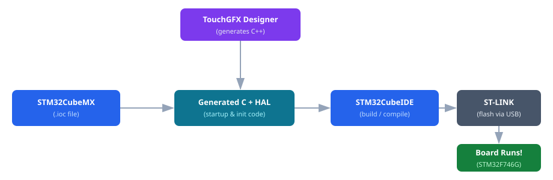

The software stack
STM32 development for this display board uses three separate applications — TouchGFX Designer, STM32CubeMX, and STM32CubeIDE — plus the HAL driver layer underneath. Since CubeIDE 2.0 they are distinct downloads; this page explains what each does and how they hand off to each other.
TouchGFX Designer (v4.26.1)
TouchGFX is the drag-and-drop designer for the on-screen UI — buttons, images, text, animations on the 4.3-inch LCD. For a supported board it also scaffolds the whole project: pick the STM32F746G-DISCO template and it generates the CubeMX .ioc, the CubeIDE project, and the C++ for your screens. On this board, TouchGFX is where you start.
STM32CubeMX (v6.17.0)
CubeMX is a graphical configuration tool. Instead of hand-writing every hardware initialisation routine, you use its point-and-click interface to decide which pins do what (GPIO output, UART, SPI, …), how fast the processor clock runs, and which built-in peripherals (timers, ADC, USB, …) are turned on. When you are happy with the setup you click Generate Code and CubeMX writes all the C startup and initialisation code for you automatically.
All of your choices are stored in a single project file with the extension
.ioc. Think of the .ioc file as the "source of truth" for your
hardware configuration — you re-open it in CubeMX any time you need to change a pin or
enable a new peripheral.
STM32CubeIDE (v2.1.0)
CubeIDE is the integrated development environment (IDE) — the program where you spend most of your time. Inside CubeIDE you:
- Write and edit your C/C++ application code.
- Compile (also called build) it into a binary that the microcontroller can execute.
- Flash that binary onto the board — copy it into the chip's internal flash memory so it survives a power cycle.
- Debug it step-by-step: pause execution, inspect variables, set breakpoints.
Since CubeIDE 2.0, the CubeMX configuration engine is no longer bundled. CubeIDE is now purely the editor/compiler/debugger: you write and build your C/C++ backend here, flash it over ST-LINK, and step through it in the debugger. Pin and peripheral configuration happens in the separate CubeMX app, and .ioc files open there — not in CubeIDE.
Supporting cast
- HAL — Hardware Abstraction Layer
-
ST's ready-made C library that ships with every generated project. Instead of poking
hardware registers directly (which requires reading hundreds of pages of the chip's
reference manual), you call simple functions like
HAL_GPIO_TogglePin()orHAL_UART_Transmit(). HAL handles the register details for you. - ST-LINK
-
A small debugger/programmer chip that is physically soldered onto the DISCO board. A
single USB cable between your PC and the board's ST-LINK USB connector gives you
three things at once: flashing new firmware, step-by-step debugging, and a virtual serial
(COM) port for
printf-style logging. - The
.iocfile - Your project's hardware configuration, saved in XML format by CubeMX. Check it into version control alongside your source code — it is the recipe that lets CubeMX regenerate the correct initialisation code after any configuration change.
- The
.touchgfxfile - Your UI design, owned by TouchGFX Designer. Generating from it writes the screen C++ into
TouchGFX/generated/(never edit that folder by hand).
How they fit together

Here is the flow in plain English:
- Configure — open your
.iocfile in CubeMX, set up pins and peripherals, then click Generate Code. - Generate — CubeMX writes the C startup files and HAL initialisation code into your CubeIDE project folder.
- Code & Build — write your application logic in CubeIDE, then
build to produce a
.elf/.binbinary. - Flash — CubeIDE sends the binary over USB through the on-board ST-LINK programmer into the chip's flash memory.
- Run — the STM32F746G executes your code; reset the board and it starts automatically.
TouchGFX feeds into step 2: its Designer generates C++ screen and widget code that lands directly inside the same CubeIDE project, so the build step compiles everything together.